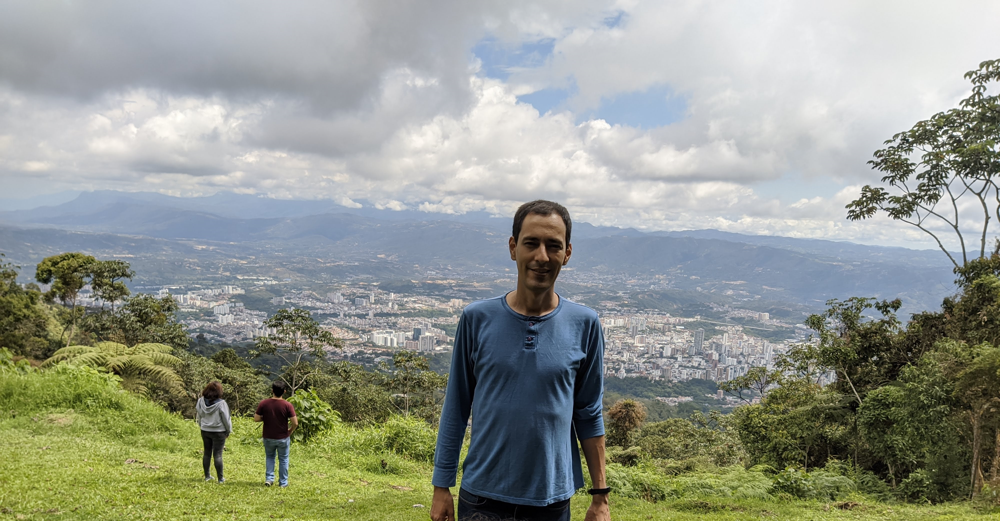
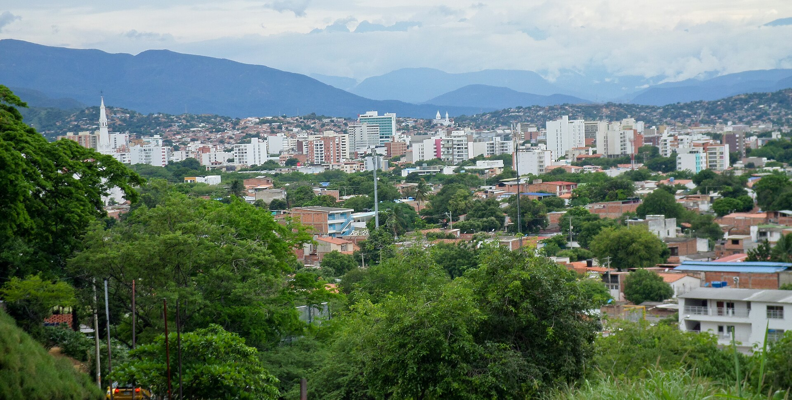
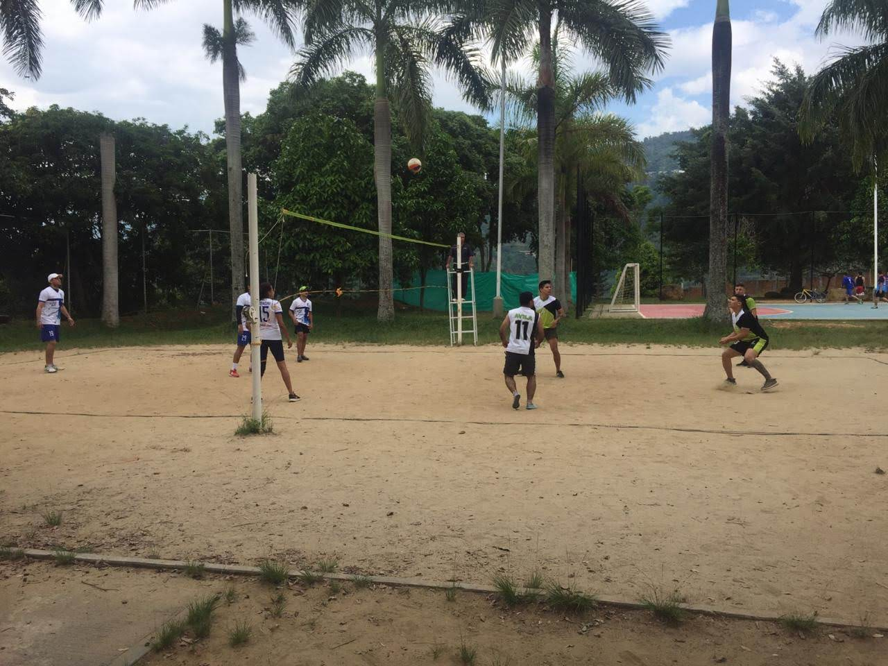
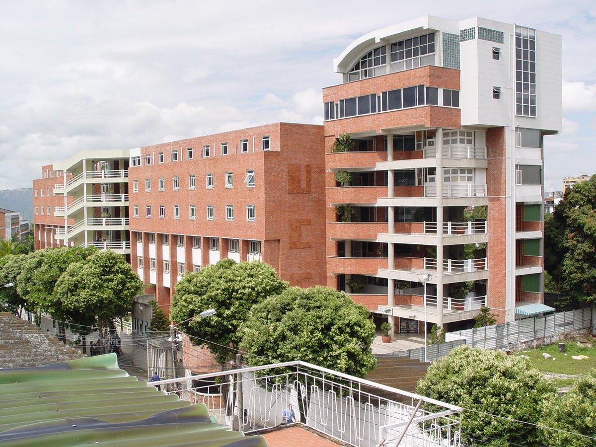

Bienvenido a mi página acerca de mi
Esta es mi primera página HTML creada como parte del Bootcamp Digitech Caritas para Proyecto 1.
Nombres y apellidos

William Fernando Hernandez Galvis.
Lugar y fecha de nacimiento

Nací 21 de abril de 1983 en la ciudad de Cúcuta, Norte de Santander, en el nororiente colombiano. Ubicada en la cordillera oriental de los Andes junto a la frontera con Venezuela, es un epicentro comercial, histórico y cultural. La ciudad goza de un clima cálido y seco durante todo el año, con temperaturas promedio que oscilan entre los 27° C y 32° C.
Hobbies y pasatiempos

Para mí, jugar voleibol es mucho más que un pasatiempo, al voleibol llego a mí a los 12 años por azar cuando en la secundaria ya no había más cupos de futbol o baloncesto para cursar el curso de deportes obligatorio, mi única opción por descarte fue entrar a voleibol sin mucho entusiasmo, pero después de recibir el entrenamiento adecuado apenas entro a la cancha, disfruto al máximo la adrenalina de cada jugada, la precisión necesaria para un buen voleo y la fuerza al rematar en la red. Debes tener un sentido de comunidad y trabajo en equipo, ya que dependes por completo de la sincronía y la confianza con tus compañeros para salvar cada balón. Es un deporte que me mantiene activo físicamente, despeja mi mente por completo y me ha permitido construir grandes amistades dentro y fuera de la cancha.
Estudios

Me gradue de la Universidad Cooperativa de Colombia, Bucaramanga, Colombia como Ingeniero de Sistemas en 2007, tambien adquiri certificación Cisco Certified Associted en Universidad Autónoma de Bucaramanga, Colombia
Contacto
Puedes contactarme a través de mi correo electrónico: